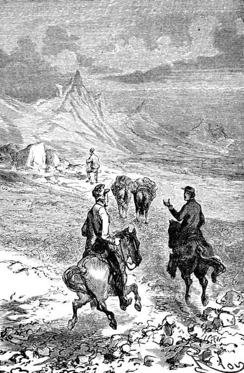
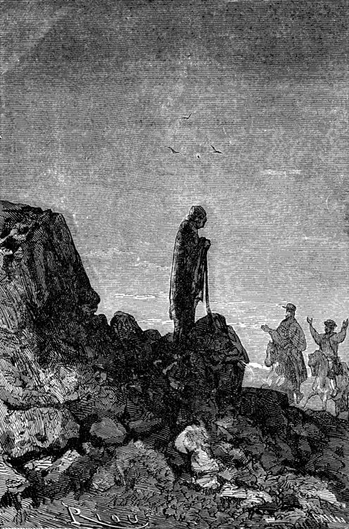
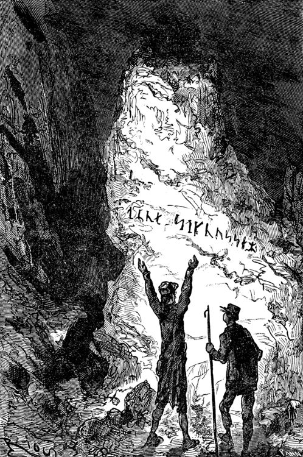
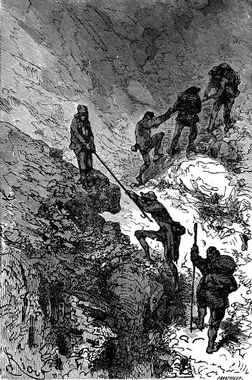

Want to listen the story?
"Undoubtedly it is Runic," said the Professor, bending his brows;"but there is a secret in it, and I mean to discover the key." A violent gesture finished the sentence. "Sit there," he added, holding out his fist towards the table. "Sitthere, and write." I was seated in a trice. "Now I will dictate to you every letter of our alphabet whichcorresponds with each of these Icelandic characters. We will see whatthat will give us. But, by St. Michael, if you should dare to deceiveme -" The dictation commenced. I did my best. Every letter was given me oneafter the other, with the following remarkable result: When this work was ended my uncle tore the paper from me and examinedit attentively for a long time. "What does it all mean?" he kept repeating mechanically.  Upon my honour I could not have enlightened him. Besides he did notask me, and he went on talking to himself. "This is what is called a cryptogram, or cipher," he said, "in whichletters are purposely thrown in confusion, which if properly arrangedwould reveal their sense. Only think that under this jargon there maylie concealed the clue to some great discovery!" As for me, I was of opinion that there was nothing at all, in it;though, of course, I took care not to say so. Then the Professor took the book and the parchment, and diligentlycompared them together. "These two writings are not by the same hand," he said; "the cipheris of later date than the book, an undoubted proof of which I see ina moment. The first letter is a double m, a letter which is not to befound in Turlleson's book, and which was only added to the alphabetin the fourteenth century. Therefore there are two hundred yearsbetween the manuscript and the document." I admitted that this was a strictly logical conclusion. "I am therefore led to imagine," continued my uncle, "that somepossessor of this book wrote these mysterious letters. But who wasthat possessor? Is his name nowhere to be found in the manuscript?" My uncle raised his spectacles, took up a strong lens, and carefullyexamined the blank pages of the book. On the front of the second, thetitle-page, he noticed a sort of stain which looked like an ink blot.But in looking at it very closely he thought he could distinguishsome half-effaced letters. My uncle at once fastened upon this as thecentre of interest, and he laboured at that blot, until by the helpof his microscope he ended by making out the following Runiccharacters which he read without difficulty. "Arne Saknussemm!" he cried in triumph. "Why that is the name ofanother Icelander, a savant of the sixteenth century, a celebratedalchemist!" I gazed at my uncle with satisfactory admiration. "Those alchemists," he resumed, "Avicenna, Bacon, Lully, Paracelsus,were the real and only savants of their time. They made discoveriesat which we are astonished. Has not this Saknussemm concealed underhis cryptogram some surprising invention? It is so; it must be so!" The Professor's imagination took fire at this hypothesis. "No doubt," I ventured to reply, "but what interest would he have inthus hiding so marvellous a discovery?" "Why? Why? How can I tell? Did not Galileo do the same by Saturn? Weshall see. I will get at the secret of this document, and I willneither sleep nor eat until I have found it out." My comment on this was a half-suppressed "Oh!" "Nor you either, Axel," he added. "The deuce!" said I to myself; "then it is lucky I have eaten twodinners to-day!" "First of all we must find out the key to this cipher; that cannot bedifficult." At these words I quickly raised my head; but my uncle went onsoliloquising.  "There's nothing easier. In this document there are a hundred andthirty-two letters, viz., seventy-seven consonants and fifty-fivevowels. This is the proportion found in southern languages, whilstnorthern tongues are much richer in consonants; therefore this is ina southern language." These were very fair conclusions, I thought. "But what language is it?" Here I looked for a display of learning, but I met instead withprofound analysis. "This Saknussemm," he went on, "was a very well-informed man; nowsince he was not writing in his own mother tongue, he would naturallyselect that which was currently adopted by the choice spirits of thesixteenth century; I mean Latin. If I am mistaken, I can but trySpanish, French, Italian, Greek, or Hebrew. But the savants of thesixteenth century generally wrote in Latin. I am therefore entitledto pronounce this, à priori, to be Latin. It is Latin." I jumped up in my chair. My Latin memories rose in revolt against thenotion that these barbarous words could belong to the sweet languageof Virgil. "Yes, it is Latin," my uncle went on; "but it is Latin confused andin disorder; "_pertubata seu inordinata,_" as Euclid has it." "Very well," thought I, "if you can bring order out of thatconfusion, my dear uncle, you are a clever man." "Let us examine carefully," said he again, taking up the leaf uponwhich I had written. "Here is a series of one hundred and thirty-twoletters in apparent disorder. There are words consisting ofconsonants only, as _nrrlls;_ others, on the other hand, in whichvowels predominate, as for instance the fifth, _uneeief,_ or the lastbut one, _oseibo_. Now this arrangement has evidently not beenpremeditated; it has arisen mathematically in obedience to theunknown law which has ruled in the succession of these letters. Itappears to me a certainty that the original sentence was written in aproper manner, and afterwards distorted by a law which we have yet todiscover. Whoever possesses the key of this cipher will read it withfluency. What is that key? Axel, have you got it?"  I answered not a word, and for a very good reason. My eyes had fallenupon a charming picture, suspended against the wall, the portrait ofGräuben. My uncle's ward was at that time at Altona, staying with arelation, and in her absence I was very downhearted; for I mayconfess it to you now, the pretty Virlandaise and the professor'snephew loved each other with a patience and a calmness entirelyGerman. We had become engaged unknown to my uncle, who was too muchtaken up with geology to be able to enter into such feelings as ours.Gräuben was a lovely blue-eyed blonde, rather given to gravity andseriousness; but that did not prevent her from loving me verysincerely. As for me, I adored her, if there is such a word in theGerman language. Thus it happened that the picture of my prettyVirlandaise threw me in a moment out of the world of realities intothat of memory and fancy. There looked down upon me the faithful companion of my labours and myrecreations. Every day she helped me to arrange my uncle's preciousspecimens; she and I labelled them together. Mademoiselle Gräuben wasan accomplished mineralogist; she could have taught a few things to asavant. She was fond of investigating abstruse scientific questions.What pleasant hours we have spent in study; and how often I enviedthe very stones which she handled with her charming fingers. Then, when our leisure hours came, we used to go out together andturn into the shady avenues by the Alster, and went happily side byside up to the old windmill, which forms such an improvement to thelandscape at the head of the lake. On the road we chatted hand inhand; I told her amusing tales at which she laughed heartilv. Then wereached the banks of the Elbe, and after having bid good-bye to theswan, sailing gracefully amidst the white water lilies, we returnedto the quay by the steamer. That is just where I was in my dream, when my uncle with a vehementthump on the table dragged me back to the realities of life. "Come," said he, "the very first idea which would come into any one'shead to confuse the letters of a sentence would be to write the wordsvertically instead of horizontally." "Indeed!" said I. "Now we must see what would be the effect of that, Axel; put downupon this paper any sentence you like, only instead of arranging theletters in the usual way, one after the other, place them insuccession in vertical columns, so as to group them together in fiveor six vertical lines." I caught his meaning, and immediately produced the following literarywonder:  "Good," said the professor, without reading them, "now set down thosewords in a horizontal line." I obeyed, and with this result: Iyloau lolwrb ou,nGe vwmdrn eeyea! "Excellent!" said my uncle, taking the paper hastily out of my hands."This begins to look just like an ancient document: the vowels andthe consonants are grouped together in equal disorder; there are evencapitals in the middle of words, and commas too, just as inSaknussemm's parchment." I considered these remarks very clever. "Now," said my uncle, looking straight at me, "to read the sentencewhich you have just written, and with which I am wholly unacquainted,I shall only have to take the first letter of each word, then thesecond, the third, and so forth." And my uncle, to his great astonishment, and my much greater, read: "I love you well, my own dear Gräuben!" "Hallo!" cried the Professor. Yes, indeed, without knowing what I was about, like an awkward andunlucky lover, I had compromised myself by writing this unfortunatesentence. "Aha! you are in love with Gräuben?" he said, with the right look fora guardian. "Yes; no!" I stammered. "You love Gräuben," he went on once or twice dreamily. "Well, let usapply the process I have suggested to the document in question." My uncle, falling back into his absorbing contemplations, had alreadyforgotten my imprudent words. I merely say imprudent, for the greatmind of so learned a man of course had no place for love affairs, andhappily the grand business of the document gained me the victory. Just as the moment of the supreme experiment arrived the Professor'seyes flashed right through his spectacles. There was a quivering inhis fingers as he grasped the old parchment. He was deeply moved. Atlast he gave a preliminary cough, and with profound gravity, namingin succession the first, then the second letter of each word, hedictated me the following: I confess I felt considerably excited in coming to the end; theseletters named, one at a time, had carried no sense to my mind; Itherefore waited for the Professor with great pomp to unfold themagnificent but hidden Latin of this mysterious phrase. But who could have foretold the result? A violent thump made thefurniture rattle, and spilt some ink, and my pen dropped from betweenmy fingers. "That's not it," cried my uncle, "there's no sense in it." Then darting out like a shot, bowling down stairs like an avalanche,he rushed into the Königstrasse and fled.